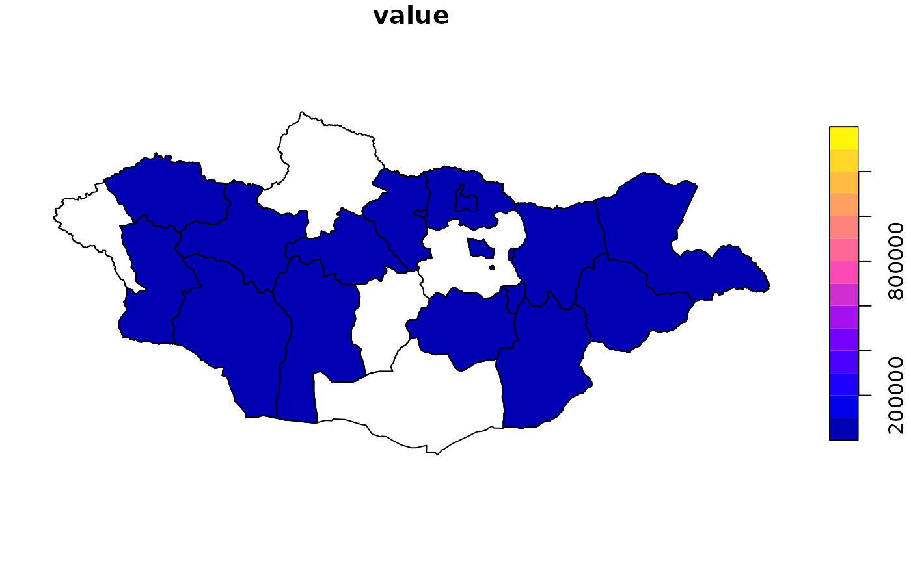

This vignette demonstrates a reproducible pattern to perform code-based joins to administrative boundaries.
Because NSO table classifications vary by table, we first obtain the
table’s codebook (via nso_itms_detail()) and identify the
field that corresponds to an administrative division (e.g.,
aimag-level). We then construct a one-time crosswalk that maps the
table’s codes to boundary identifiers.
tbl <- "DT_NSO_0300_004V5" # Resident population by location and region
# 1) Fetch codebook for the table (PXWeb variables)
cb <- nso_variables(tbl)
unique(cb$field)## [1] "Region" "Location" "Year"
# 2) Inspect items under the likely admin dimension (e.g., 'Region')
adm_field <- "Region"
adm_codes <- cb %>% dplyr::filter(field == adm_field) %>% dplyr::select(itm_id, scr_eng)
head(adm_codes)## # A tibble: 6 × 2
## itm_id scr_eng
## <chr> <chr>
## 1 0 Total
## 2 1 Western region
## 3 183 Bayan-Ulgii
## 4 18301 Ulgii
## 5 1830151 1-r bag, Khust aral
## 6 1830153 2-r bag, Tsagaan ereg
# 3) Build a crosswalk from table codes to boundary keys via name normalization
adm1 <- mn_boundaries("ADM1") %>% mn_boundaries_normalize()
adm_codes$name_std <- adm_codes$scr_eng %>% stringr::str_to_lower() %>%
stringi::stri_trans_general("Latin-ASCII") %>%
stringr::str_replace_all("[^a-z0-9]+", " ") %>% stringr::str_squish()
cw <- adm_codes %>%
dplyr::left_join(
dplyr::tibble(shapeName = adm1$shapeName, shapeISO = adm1$shapeISO) %>%
dplyr::mutate(name_std = mn_boundaries_normalize(adm1)$name_std),
by = "name_std"
) %>%
dplyr::select(tbl_code = itm_id, shapeISO, shapeName)
head(cw)## # A tibble: 6 × 3
## tbl_code shapeISO shapeName
## <chr> <chr> <chr>
## 1 0 NA NA
## 2 1 NA NA
## 3 183 NA NA
## 4 18301 NA NA
## 5 1830151 NA NA
## 6 1830153 NA NA
periods <- nso_table_periods(tbl)
dat <- nso_data(tbl, selections = list(Year = tail(periods, 1)), labels = "en")
# Use the admin field as the key
col <- adm_field
if (col %in% names(dat)) dat$tbl_code <- dat[[col]] else dat$tbl_code <- NA_character_
dat_coded <- dat %>%
dplyr::left_join(cw, by = "tbl_code")
# 5) Join to sf using shapeISO (preferred over names when available)
adm1_keys <- mn_boundary_keys("ADM1") # contains shapeISO and name_std
geo <- mn_boundaries("ADM1") %>% dplyr::left_join(adm1_keys, by = c("shapeISO"))
joined <- dplyr::left_join(geo, dat_coded, by = "shapeISO")
plot(joined["value"]) # or use your preferred mapping workflow
Notes:
- This example constructs a crosswalk dynamically; you can persist it
(e.g.,
inst/extdata/adm1_cw.csv) and reuse it across tables if they share admin codes. - If a table uses different admin levels, repeat the pattern with
mn_boundaries("ADM2")and adjust the field accordingly. - Once NSO publishes stable geographic codes, you can replace the name-normalization with a direct code match to boundary keys.